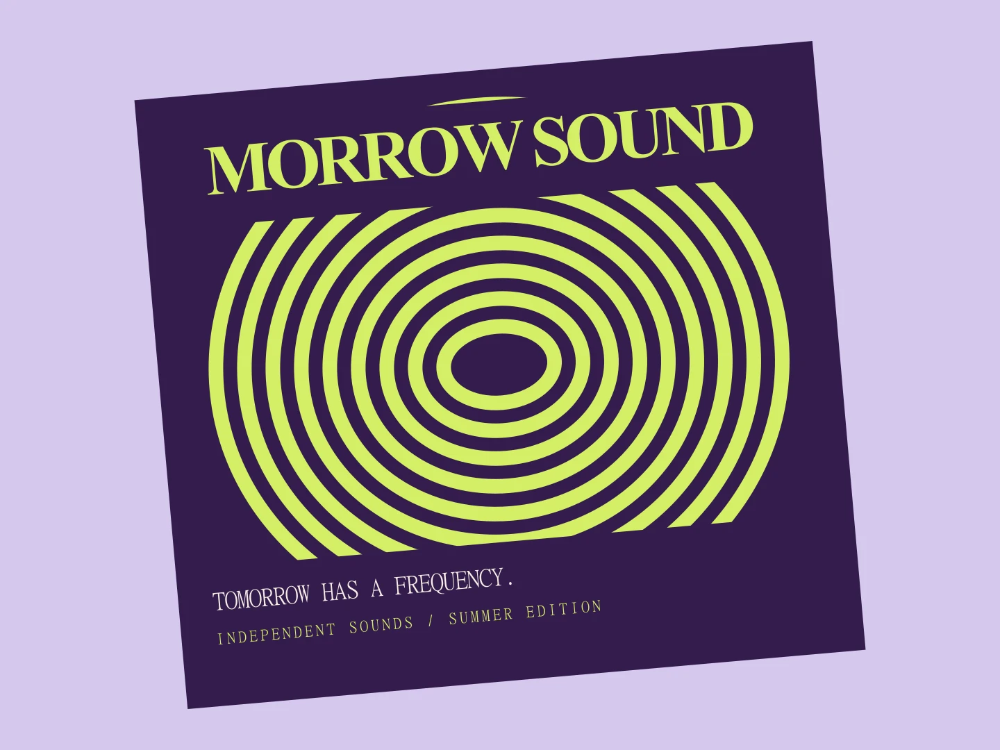
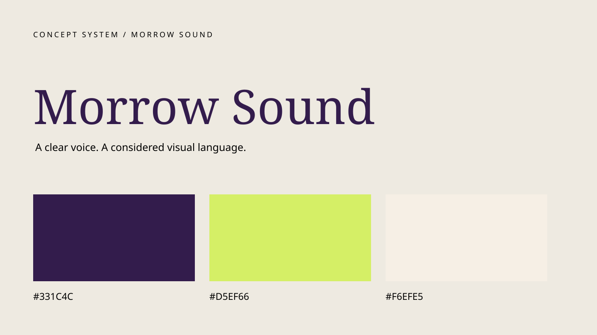
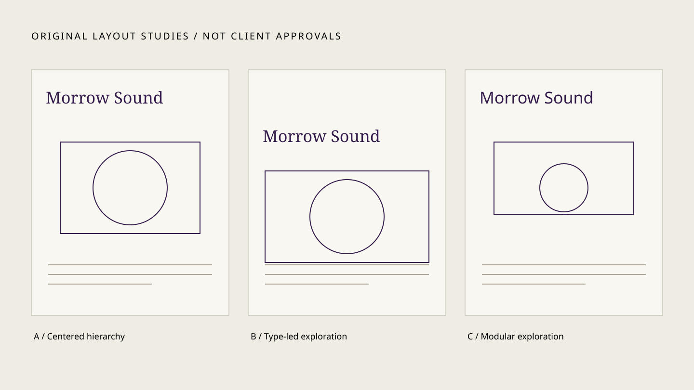

CAMPAIGN / 2025 / SELF-INITIATED CONCEPT
Morrow Sound
A visual frequency for tomorrow's independent sounds.

- CLIENT / INDUSTRY
- Self-initiated music campaign
- ROLE
- Independent concept designer
- YEAR
- 2025
- COLLABORATORS
- None / self-initiated
The challenge
Make an independent music series readable at a glance and recognizable at a distance. Curious music audiences; flexible formats from large posters to small social crops.
A considered direction
Lime concentric ellipses bring rhythm without representing an actual audio waveform. Condensed-looking uppercase typography, plum and lime, generous copy-safe bands and a centered motion-inspired motif.
From idea to application
Key visual, event poster, social crop system and campaign art direction. Tested wave-based and circular compositions; fixed type bands keep essential information readable when the visual is cropped. Real event details and motion production are pending.
An honest outcome
Self-initiated concept study only. No commercial launch, real client endorsement, measured business result or production proof has been supplied. Collaborators: none.


A verified result or approved client perspective belongs here.
No fabricated metrics or praise.